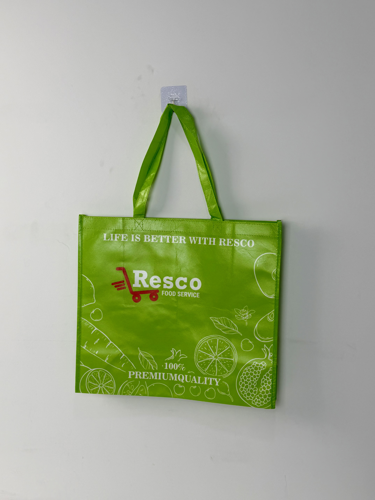

A vibrant lime-green laminated tote designed for Resco, a US food-service wholesale supplier, featuring playful produce illustrations and bold brand messaging that bridges professional B2B identity with consumer-friendly appeal.

Resco is a leading US food-service wholesale distributor supplying restaurants, cafeterias, and institutional kitchens across the Midwest and Southeast. Unlike consumer-facing grocery chains, Resco operates primarily in the B2B space — yet recognized that their customers' end consumers increasingly expect sustainable, branded carry solutions. The bag project represented a strategic pivot: transforming a functional shipping container into a marketing asset that travels from commercial kitchen to dining table.
Our customers aren't just buying ingredients — they're buying the confidence that everything they serve meets premium standards. The bag needs to say 'quality' before the box is even opened.
The design challenge was unique: create packaging that appealed simultaneously to professional chefs making purchasing decisions and to the diners who might ultimately see the bag in a restaurant's retail area or farmers-market pop-up. The solution leveraged fresh-food iconography and a color palette that signaled health, cleanliness, and natural origin.
The creative direction leaned into the sensory language of fresh produce. Rather than corporate minimalism, the design deploys an all-over pattern of illustrated fruits and vegetables — carrots, citrus slices, pomegranates, and leafy greens — rendered in clean white line art against the signature lime-green field. This approach transforms the bag from a utilitarian container into a mobile billboard for freshness and quality.
High-chroma color ensures the bag stands out in commercial kitchen environments and retail displays.
White line-art fruits and vegetables create an organic texture that reads as premium rather than promotional.
BOPP film provides moisture and grease resistance essential for food-service environments.
Red shopping-cart icon paired with white wordmark creates immediate brand recall across cultural markets.
Food-service wholesale operations place unique demands on reusable bags. They must withstand repeated use in environments where moisture, grease, and temperature fluctuations are constant. The Resco tote was specified with a heavier 120gsm base fabric and full gloss lamination to meet these durability requirements.
| Parameter | Specification | Test Standard |
|---|---|---|
| Load Capacity | 12 kg | ASTM D5265 |
| Reuse Cycles | > 75 cycles | Internal Protocol |
| Water Resistance | Grade 4 (spray test) | AATCC 22 |
| Seam Strength | > 30 N/cm | ASTM D1683 |
The production workflow prioritized color accuracy and lamination integrity. With a four-color process print covering nearly the entire bag surface, any registration drift or color variation would be immediately visible. The following five-stage process ensured batch consistency across the 50,000-unit initial order.
Color separation optimized for non-woven substrate dot gain. Produce illustrations vector-traced for crisp line-art reproduction at 175 LPI.
CMYK four-color process with electrostatic assist. Inline drying tunnels at 110°C prevent solvent retention and odor.
18-micron glossy film dry-laminated with solvent-free adhesive. Calendered at 60°C for permanent bond and surface flatness.
Ultrasonic die-cutting with sealed edges. Box gusset pre-scored and folded for automatic bottom-panel geometry.
Self-material handles ultrasonically welded and bar-tack reinforced. AQL 1.5 inspection for print registration and seam integrity.
The Resco tote was introduced as a premium reusable bag option for wholesale customers and as a branded carry solution for Resco's own retail pop-up events at food-service trade shows. Its dual-audience design proved equally effective in B2B sales meetings and consumer-facing environments.
Key Insight: Trade-show feedback revealed that the produce illustration pattern triggered immediate associations with farm-fresh quality and natural ingredients — precisely the brand values Resco wanted to communicate to restaurant buyers evaluating their premium product lines.
The bag's durability in commercial kitchen environments exceeded expectations. Unlike standard 80gsm reusable bags that degrade after 20-30 cycles, the 120gsm laminated construction maintained structural integrity through repeated washing and heavy loading. This longevity translated into sustained brand exposure over months rather than weeks.
Three design decisions differentiate this wholesale tote from standard reusable shopping bags. Each addresses the tension between B2B functionality and B2C brand appeal.
Using stylized line-art produce rather than photographic imagery allowed precise color control across print batches and created a more timeless aesthetic that wouldn't date as quickly as trend-driven photography.
Most reusable bags are designed for light grocery carry. The 120gsm base with gloss BOPP lamination withstands the heavier loads and harsher conditions of commercial food-service transport, extending functional life by 3x.
The 38cm width accommodates standard food-service packaging boxes — a dimension overlooked by narrow retail totes designed primarily for loose produce. This functional fit increased adoption among Resco's core restaurant clientele.
We manufacture premium laminated reusable bags for wholesale distributors, restaurant chains, and food-service suppliers. From B2B durability to B2C brand appeal, we balance both requirements.